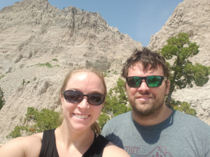
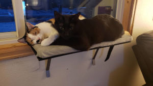

About Me
Mark lives in Loveland Colorado with his amazing wife, Katie, and two cats, Merlin and Kilala. Originally from North Carolina, he moved to Colorado with Katie in 2016 and has been in love with the mountains ever since.
Originally a graduate from the University of North Carolina at Chapel Hill with a Bachelor's Degree in Biology, he is now attending Front Range Community College to further his education with a degree in Computer Information Systems.
Mark currently works as a Data Analyst in Oncology Clinical Research and hopes to pursue a further knowledge and experience in the technology field.
Besides learning about technology, Mark enjoys reading books, playing video games, traveling with his partner, and spending quality time with his cats.
Contact Me
The best way to contact me is via email. I do my best to respond as best I can, but due to other priorities responses may take around a week.
mark.corder88@gmail.com